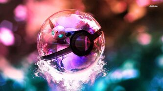
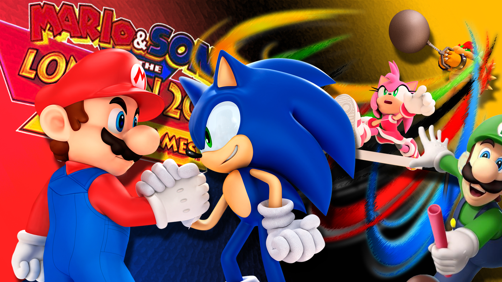

Se conoce como retrogaming, en español «jugar a los clásicos», a la afición de jugar y recolectar computadoras, videojuegos y juegos arcade antiguos.
Con estos videojuegos se puede jugar tanto con el hardware original como con uno moderno y un emulador, o por medio de puertos o compilaciones..